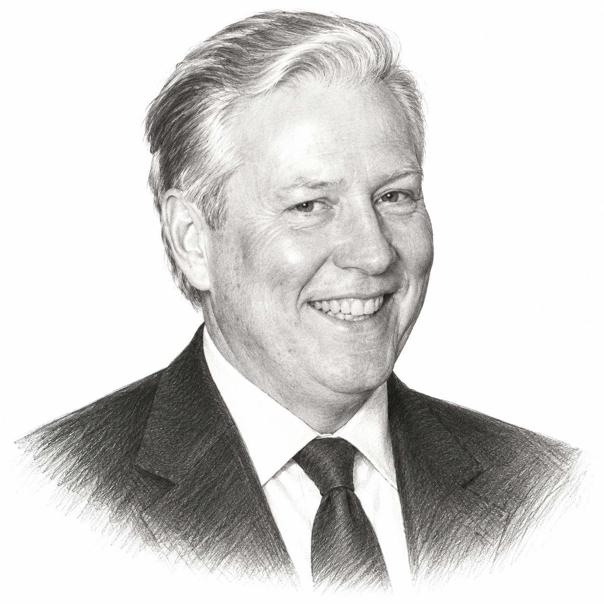
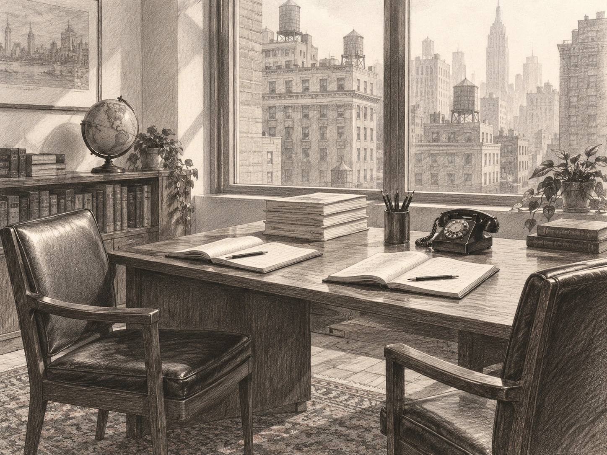
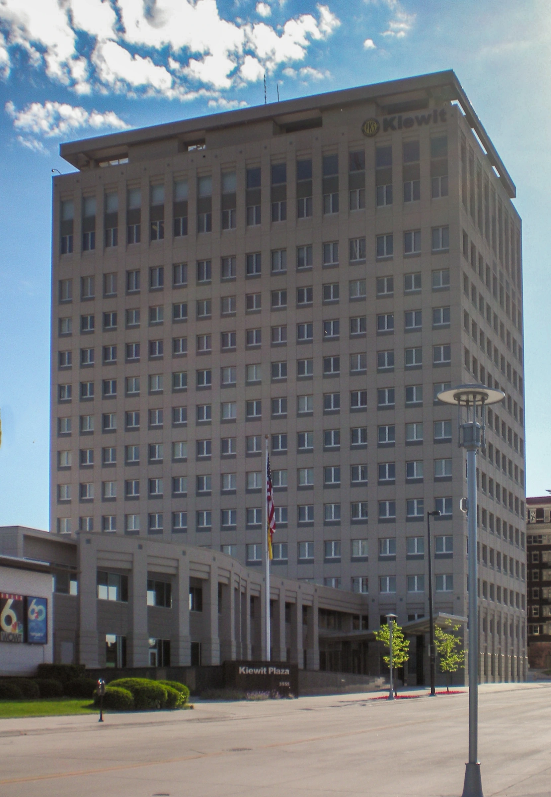

William J. Ruane was born in Chicago on 24 October 1925 and grew up in Oak Park, Illinois, a middle-class suburb just west of the city. His father, Thomas Ruane, was the son of Irish immigrants and had done well as a banker until his advancement was blocked because he was a Catholic, whereupon he left and set up a small delivery company with three trucks on the south side of Chicago. Bill Ruane's younger sister, Pat, remembered a stable home and a boy who was close to his father, "who always emphasized the importance of honesty".
After a Christian Brothers high school in Chicago, Bill Ruane went to the University of Minnesota and graduated cum laude in electrical engineering in 1945, by which time he had joined the US Navy and been sent to Hawaii for the planned invasion of Japan, which never took place. He stayed on active duty until 1947 and then joined the training programme at General Electric, where he found quickly that he did not enjoy working as an engineer, so that he changed direction and enrolled at Harvard Business School on the GI Bill, graduating in 1949. "Five of us rented an apartment," Mr Ruane told Forbes fifty years later, "a brownstone right off Fifth Avenue, $300 a month."

From Harvard he went to Kidder, Peabody & Co, the Wall Street broking and investment banking firm, and stayed there for 19 years, advising clients and managing money for them, and it was there that he met Rick Cunniff, a fellow Navy officer and Harvard graduate who would become his partner. However, the decision that shaped his career was taken soon after he arrived, when, as Warren Buffett later put it, "he realized that he needed to get a real business education, so he came up to take Ben's course at Columbia, where we met in early 1951". The two became lifelong friends who, according to Bill Ruane's daughter Lili, spoke on the telephone every day.
For the next two decades Bill Ruane's record was a private one, built on client accounts at Kidder, Peabody rather than on a public fund, although Warren Buffett wrote in 1984 that "Bill's record from 1951 to 1970, working with relatively small sums, was far better than average". In those years Bill Ruane married Elizabeth Greiner in 1956 and had two children before the marriage ended in divorce in 1967, and two years later he married Joyce Merbach, with whom he had two more, and the family lived in Manhattan with a farm in Connecticut for weekends.
The turning point came in 1969, when Warren Buffett decided to wind up the Buffett Partnership and, asked by his partners where their money might go next, named just one person. "I have had considerable opportunity to observe his qualities of character, temperament and intellect," Mr Buffett wrote to his partners that October, "and I consider Bill to be an exceptionally high probability decision on character and a high probability one on investment performance." Bill Ruane had already been thinking about leaving Kidder, Peabody, and the prospect of taking on many of the Buffett partners decided the matter, so that with Rick Cunniff and a third colleague, Sidney Stires, he formed the firm that became Ruane, Cunniff & Co, just as the market was peaking.

Sequoia Fund was offered to the public on 15 July 1970. "He set it up at a terrible time, just when I was quitting," Mr Buffett wrote. "He went right into the two-tier market and all the difficulties that made for comparative performance for value-oriented investors." Investors were paying very high prices for a group of large growth companies, the so-called Nifty Fifty, whereas Bill Ruane was purchasing cheap shares that nobody wanted, so that Sequoia Fund lagged the S&P 500 in each of its first three calendar years, returning just 3.7% against 18.9% in 1972. When the market broke in 1973 the fund fell 24.0%, worse than the index's 14.8% fall, because the cheap shares became cheaper still, and the fund's own records show that $10,000 invested at the launch, with distributions reinvested, was worth $10,013 at the end of May 1974.
The pressure on Bill Ruane personally was considerable, because he had put all of his capital into the new firm. "We were flat broke with maybe a thousand dollars," his daughter Lili later recalled, and he sold part of the farmland he owned in Connecticut to keep his family and the firm going. He did not change course, however, telling his shareholders during the slump that "it is entirely possible that you have the dubious distinction of being a stockholder in a fund which has the lowest average price-earnings ratio in the country". In 1974 the fund fell a further 15.7%, although the S&P 500 fell 26.4%, and then the recovery came, because Sequoia Fund gained 60.5% in 1975 and 72.3% in 1976, so that $100 invested at the launch, worth around $84 at the end of 1974, had become around $234 by the end of 1976, against around $174 for the same $100 in the index. The former Buffett partners had, as Mr Buffett later wrote, "to an amazing degree, not only stayed with him but added money, with the happy result shown".
Over the following three decades the way Bill Ruane ran the money changed very little, according to Tom Russo, an analyst at the firm from 1984 to 1988, who recalled that he always ran a highly concentrated portfolio of around ten shares and held them for the long term, paying close attention to the unit economics of a business, such as the profit on each Duracell battery. The firm's own description of the approach, in its annual reports, was "to make concentrated commitments of capital in a limited number of companies that have superior long-term economic prospects and that sell at what we believe are attractive prices".

The clearest example of that concentration was Berkshire Hathaway itself, which Sequoia Fund purchased early in its life and never sold, so that the holding grew to around 30% of the portfolio and stayed there. At the end of 2005 the holding was worth $1.21bn, or 33.8% of the fund's net assets of $3.57bn. Putting this another way, one dollar in three of the fund was invested in a company run by its manager's closest friend, so that a good part of Sequoia Fund's later record is Berkshire Hathaway's record as well as Bill Ruane's, and although the judgement about the business and the man running it worked, it was also the kind of position in which a single error would have mattered a great deal.
In 1982 Bill Ruane closed Sequoia Fund to new investors, a decision that Harvard Business School describes as a surprising one, since he could have taken on more investors and built a larger firm but judged that doing so would weaken his effectiveness for the clients he already had. The fund charged a management fee of 1% of assets, so that a larger fund would have meant more revenue for the firm, and the fund stayed shut for 26 years. Warren Buffett put the argument plainly two years later. "Size is the anchor of performance," Mr Buffett wrote. "It doesn't mean you can't do better than average when you get larger, but the margin shrinks."
It was in that 1984 article, "The Superinvestors of Graham-and-Doddsville", that Bill Ruane's record was first set out in public. From the launch in July 1970 to the end of March 1984, Sequoia Fund had returned 17.2% a year compounded after its management fee, against 10.0% for the S&P 500 with dividends reinvested, so that the fund had gained 775.3% over the period and the index 270.0%, and adding back the 1% fee gave a gross return of 18.2% a year. Mr Buffett reminded his readers that when he recommended Bill Ruane in 1969, "I said at the time that if he achieved a four-point-per-annum advantage over the Standard & Poor's, that would be solid performance. Bill has achieved well over that, working with progressively larger sums of money."
The record over the whole of Bill Ruane's tenure is longer and somewhat less spectacular. The fund's annual report for 2005 shows that $10,000 invested on 15 July 1970, with dividends reinvested and capital gains distributions accepted in shares, had grown to $1,869,038 by 31 December 2005, a gain of 18,590% that works out at around 15.9% a year compounded over 35 and a half years, after fees but before any taxes the shareholder would have paid. The report gives no S&P 500 figure for the same period. Even late on the road was not smooth, because the fund fell around 16.5% in 1999 while the index rose, then rose in each of 2000, 2001 and 2002 while the S&P 500 lost nearly half its value. Nor was the record Bill Ruane's alone, since Rick Cunniff was his partner throughout and Robert Goldfarb, a long-serving analyst, became president in 2004, when the firm was renamed Ruane, Cunniff & Goldfarb.
In the second half of his life Bill Ruane set about giving money away with the same attention to detail. In 1986 he created the Carmel Hill Fund to work on poverty and racial inequality in Harlem, and in 1992, with the Children's Aid Society, he adopted a single block of West 118th Street. "My idea was simple," Mr Ruane said. "It wasn't to throw a lot of money at a complex problem. It involved a low-cost leveraging of resources, medical, housing, social service, that have been out there for years." The children on the block were given scholarships to a nearby Catholic school, and he also founded TeenScreen, a programme based at Columbia University that tested teenagers for depression and other risk factors for suicide and which, by the time of his death, was operating at 434 sites in 43 states. Most of his giving was anonymous.
Bill Ruane died on 4 October 2005, of complications from lung cancer, twenty days before his 80th birthday. A week later the fund's quarterly report took the form of a eulogy signed by Rick Cunniff, Robert Goldfarb and David Poppe. "He built a firm that was more like a second family, which grew over the years," his successors wrote. "He insisted that there be nothing mean in the way the firm did business." Warren Buffett described him as "a remarkable investor and a remarkable human being".
What followed belongs to the fund rather than to the man. Sequoia Fund reopened to new investors on 1 May 2008 with assets of around $3.8bn. By 2011 its managers had made Valeant Pharmaceuticals the fund's largest holding, a position that grew to more than 30% of assets by the summer of 2015, and when Valeant's shares then fell by around 90%, Sequoia Fund lost 7.3% in 2015 against a 1.4% gain for the S&P 500 and Robert Goldfarb resigned in March 2016. The fund's since-inception figure now carries that episode inside it, which is one reason to read Bill Ruane's record as ending on 4 October 2005, and a compound rate achieved over 35 years is in any case a description of the past and not a forecast.

The record
| Year | S&P 500 | Sequoia Fund |
|---|---|---|
| 1970 (from 15 July) | +20.6% | +12.1% |
| 1971 | +14.3% | +13.5% |
| 1972 | +18.9% | +3.7% |
| 1973 | −14.8% | −24.0% |
| 1974 | −26.4% | −15.7% |
| 1975 | +37.2% | +60.5% |
| 1976 | +23.6% | +72.3% |
| 1977 | −7.4% | +19.9% |
| 1978 | +6.4% | +23.9% |
| 1979 | +18.2% | +12.1% |
| 1980 | +32.3% | +12.6% |
| 1981 | −5.0% | +21.5% |
| 1982 | +21.4% | +31.2% |
| 1983 | +22.4% | +27.3% |
| 1984 (first quarter) | −2.4% | −1.6% |
| July 1970 to March 1984, overall gain | 270.0% | 775.3% |
| July 1970 to March 1984, compounded annually, after fees | 10.0% | 17.2% |
| July 1970 to March 1984, compounded annually, before 1% fee | — | 18.2% |
| 15 July 1970 to 31 December 2005, value of $10,000 | not given | $1,869,038 |
| 15 July 1970 to 31 December 2005, compounded annually, after fees | not given | around 15.9% |
The annual figures to March 1984 are from Table 4 of Warren Buffett's 1984 article "The Superinvestors of Graham-and-Doddsville", in US dollars, with dividends (and, for Sequoia Fund, capital gains distributions) treated as reinvested, and after the fund's 1% management fee. The figures for the full tenure come from the illustration of an assumed $10,000 investment in Sequoia Fund's annual report for 2005, with dividends reinvested and capital gains distributions accepted in shares, before any taxes payable by the shareholder; the compound rate is calculated from that table and is not stated in the report, which gives no S&P 500 figure for the same period; contemporary reporting in 2008, citing Morningstar, put the fund at more than three times the index since 1970, but that figure has not been verified against a primary source. They are the record of the fund, which Bill Ruane co-managed with Rick Cunniff and later Robert Goldfarb, and not of his private clients at Kidder, Peabody from 1951 to 1970, for which no public record exists. They stop at his death and do not include the fund's later record under his successors.
Life in dates
- 1925Born in Chicago on 24 October; grows up in Oak Park, Illinois.
- 1945Graduates cum laude in electrical engineering from the University of Minnesota; serves in the US Navy, posted to Hawaii for the planned invasion of Japan.
- 1947Discharged from the Navy as a lieutenant junior grade; briefly joins General Electric's training programme, then enters Harvard Business School.
- 1949Graduates from Harvard Business School and joins Kidder, Peabody & Co in New York.
- 1951Takes Benjamin Graham's course at Columbia and meets Warren Buffett.
- 1956Marries Elizabeth Greiner; two children. The marriage ends in divorce in 1967.
- 1969Marries Joyce Merbach; two more children. Forms Ruane, Cunniff & Stires with Rick Cunniff and Sidney Stires as Warren Buffett winds up his partnership and recommends him to his partners.
- 1970Sequoia Fund offered to the public on 15 July.
- 1970–72The fund lags the S&P 500 in each of its first three calendar years.
- 1973–74The fund falls 24.0% and then 15.7%; Bill Ruane sells part of his Connecticut farmland to keep the firm going.
- 1975–76The fund gains 60.5% and then 72.3%.
- 1982Closes Sequoia Fund to new investors.
- 1984Warren Buffett publishes the fund's record in "The Superinvestors of Graham-and-Doddsville".
- 1986Creates the Carmel Hill Fund.
- 1992Adopts a block of West 118th Street in Harlem with the Children's Aid Society.
- 1998The Carmel Hill project receives a "Fulfilling the Dream" award named after Martin Luther King.
- 2004Robert Goldfarb becomes president and the firm is renamed Ruane, Cunniff & Goldfarb. Receives the Teachers College, Columbia University, medal.
- 2005Dies on 4 October, aged 79, of complications from lung cancer. Sequoia Fund's net assets at the year end are $3.57bn, of which 33.8% is Berkshire Hathaway.
- 2008Sequoia Fund reopens to new investors on 1 May.
- 2015–16The fund's Valeant Pharmaceuticals holding, which had exceeded 30% of assets, collapses; Robert Goldfarb resigns in March 2016.
Sources
- Warren Buffett, "The Superinvestors of Graham-and-Doddsville" (1984): Table 4, the 1951 meeting, the 1969 recommendation and four-point target, the "terrible time" and "size is the anchor" passages.
- James Russell Kelly, "Bill Ruane: A Superinvestor of Graham and Doddsville", Financial History, Winter 2023: birth, family, education, Navy, General Electric, Harvard class of 1949 and the Forbes quotation, Kidder, Peabody, Rick Cunniff and Sidney Stires, the October 1969 Buffett letter quotation, the early years and farmland sale, the 1973 shareholder letter quotation, the Berkshire Hathaway weighting of around 30%, working methods, Carmel Hill and the Harlem block, the 2005 eulogy, Buffett's tribute.
- Sequoia Fund, Inc., annual report for 2005 (SEC Form N-CSR): growth of $10,000 from 15 July 1970 to 31 December 2005, the 1999 fall and 2000–02 gains, Berkshire Hathaway holding and net assets, statement of investment philosophy.
- Sequoia Fund, Inc., prospectus supplement, 7 October 2005 (SEC Form 497): death on 4 October 2005 and continuing management.
- Harvard Business School, Great American Business Leaders of the Twentieth Century: William J. Ruane: the 1982 closure and its reasoning.
- Sequoia Fund: About: founding by Bill Ruane and Rick Cunniff in 1970 and the stated approach.
- Teachers College, Columbia University, "Remembering TC Medalist William Ruane", November 2005: TeenScreen, the Carmel Hill scholarships, the 2004 medal.
- William J. Ruane death notice, New York Times via Legacy.com, October 2005: cause of death, TeenScreen's reach at his death, Carmel Hill, anonymous giving, family.
- Charles A. Jaffe, "Legendary Sequoia open for new money", Philadelphia Inquirer, 27 April 2008: reopening on 1 May 2008, assets of around $3.8bn, Morningstar's since-inception comparison.
- Steven Goldberg, "What I Learned From Sequoia Fund's Tragic Love Affair With Valeant", Kiplinger, 29 April 2016: Valeant as largest holding in 2011, its peak weighting and fall, Robert Goldfarb's resignation.
- Sequoia Fund, Inc., annual report for 2015 (SEC Form N-CSR): 2015 return of −7.3% against 1.4%, Valeant "more than 30% of the Fund's assets" at its peak.
- Wikipedia: William J. Ruane: used only to cross-check dates; flagged as a secondary source.